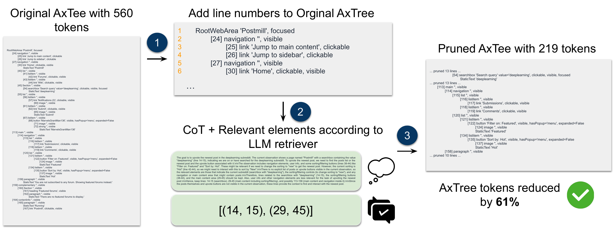
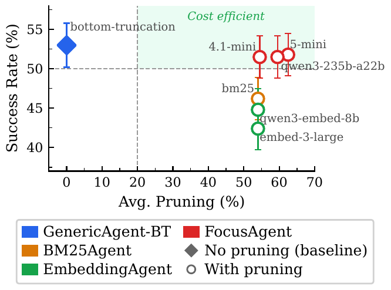
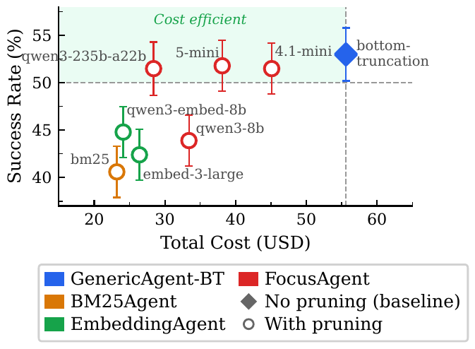

FocusAgent
Simple Yet Effective Ways of Trimming the Large Context of Web Agents
Abstract
Web agents powered by large language models (LLMs) must process lengthy web page observations to complete user goals; these pages often exceed tens of thousands of tokens. This saturates context limits and increases computational cost. Moreover, processing full pages exposes agents to security risks such as prompt injection. Existing pruning strategies either discard relevant content or retain irrelevant context, leading to suboptimal action prediction. We introduce FocusAgent, a simple yet effective approach that leverages a lightweight LLM retriever to extract the most relevant lines from accessibility tree (AxTree) observations, guided by task goals. By pruning noisy and irrelevant content, FocusAgent enables efficient reasoning while reducing vulnerability to injection attacks. Experiments on WorkArena and WebArena benchmarks show that FocusAgent achieves the performance of strong baselines with modest degradation, while reducing observation size by over 50%. Furthermore, a variant of FocusAgent significantly reduces the success rate of prompt-injection attacks, including banner and pop-up attacks, while maintaining task success performance in attack-free settings. Our results highlight that targeted LLM-based retrieval is a practical and robust strategy for building web agents that are efficient, effective, and secure.
How it works
Retrieval is applied as a pre-processing step to every observation, at every step of an episode. A lightweight LLM acts as a selective filter: it is prompted with (1) the current task goal, (2) the current observation with each line uniquely numbered, (3) optionally the interaction history, and (4) instructions on how to return line spans. The LLM identifies the line ranges likely to contribute to future action decisions, and post-processing removes everything else. The agent then acts on a much lighter context.
FocusAgent uses a soft retrieval strategy — when the retriever hesitates it is encouraged to keep more, not less — and by default uses the goal and current observation without the history. The design choices are justified by ablations in the paper. The method also extends to pages exceeding the retriever's context window by processing the AxTree in successive prompts and merging the returned ranges, though no such case arose in our experiments at 128k tokens.

FocusAgent's retrieval component on the task “Upvote the newest post in the deeplearning subreddit” at step 2 of WebArena (task 407). (1) Line numbers are assigned to each AxTree element and a prompt is built from the goal and, where applicable, the interaction history; (2) the LLM emits a chain-of-thought together with the line ranges relevant to task completion; (3) a revised AxTree is produced by removing the irrelevant lines and inserting a placeholder stating how many lines were pruned — here 560 tokens down to 219, a 61% reduction.
Experimental setup
All experiments run in BrowserGym and AgentLab on two benchmarks: WorkArena L1 (10 seeds per task, 330 tasks, 15 steps max) and WebArena (the BrowserGym test split, 381 tasks, 30 steps max). Agents are capped at 40k tokens of context — except the 5k bottom-truncation variant — and the retriever at 128k.
We compare against GenericAgent-BT, the BrowserGym generic agent with bottom truncation; EmbeddingAgent, which retrieves the top-10 chunks by cosine similarity to the goal and action history (text-embedding-3-large and Qwen3-Embedding-8B); and BM25Agent, the same setup with lexical BM25 scoring. Chunk sizes of 200 and 400 tokens are reported for both. FocusAgent varies both the retriever (GPT-4.1-mini, GPT-5-mini, Qwen3-8B, Qwen3.5-9B, Qwen3-235B-A22B) and the backbone (GPT-4.1, Claude-3.7-Sonnet, Qwen3-235B-A22B).
We report success rate (SR ± standard error), pruning — 1 − |or| / |oi|, the fraction of observation tokens removed — and the total cost in USD of every LLM call over the full benchmark, since cost is optimized jointly with accuracy rather than ignored.
Results
LLM retrieval beats classic retrieval in interactive environments. Embedding and BM25 retrieval are highly sensitive to chunk size — they score between 42.4% and 53.3% on WorkArena L1, while FocusAgent reaches 51.5%–53.2%. The gap tracks the pruning rate: at a 400-token chunk size, classic retrievers prune only ~30% of the tree, against 61% for FocusAgent. Restricted to matching the task goal, they discard chunks that are necessary for understanding the page yet never mentioned in the goal. Tuning the chunk size mitigates this failure mode without eliminating it; FocusAgent avoids it altogether and requires no tuning. What matters is not how much of the observation is pruned, but whether what remains preserves the context needed to act.

Success rate vs. average AxTree token pruning; labels indicate the retrieval model. The green region marks cost-efficient methods — those pruning at least 20% of tokens while holding near-baseline SR.

Success rate vs. total cost (USD). A method is cost-efficient if it reaches baseline SR at strictly lower cost (green region).
Retrieval methods on WorkArena L1
| Agent | SR (%) | Prun. (%) | Backbone ($) | Retriever ($) | Total ($) |
|---|---|---|---|---|---|
| GenericAgent-BT | 53.6 ±2.8 | 0 | 55.6 | – | 55.6 |
| BM25Agent-200 | 45.8 ±2.7 | 56 | 23.3 | N/A | 23.3 (−58%) |
| BM25Agent-400 | 53.3 ±2.8 | 32 | 34.3 | N/A | 34.3 (−38%) |
| EmbeddingAgent (embed-3-large)-200 | 42.4 ±2.7 | 54 | 24.7 | 0.9 | 25.6 (−54%) |
| EmbeddingAgent (embed-3-large)-400 | 46.4 ±2.7 | 31 | 34.8 | 1.4 | 36.2 (−35%) |
| EmbeddingAgent (qwen3-embed-8b)-200 | 44.8 ±2.7 | 54 | 24.1 | N/A | 24.1 (−57%) |
| EmbeddingAgent (qwen3-embed-8b)-400 | 53.0 ±2.8 | 30 | 32.0 | N/A | 32.0 (−42%) |
| FocusAgent (qwen3-8b) | 43.9 ±2.7 | 60 | 32.0 | 1.4 | 33.4 (−40%) |
| FocusAgent (qwen3.5-9b) | 48.8 ±2.8 | 63 | 27.1 | ≈0* | 27.1 (−51%) |
| FocusAgent (qwen3-235b-a22b) | 51.5 ±2.8 | 58 | 28.4 | ≈0* | 28.4 (−49%) |
| FocusAgent (4.1-mini) | 51.5 ±2.7 | 56 | 33.8 | 11.3 | 45.1 (−19%) |
| FocusAgent (5-mini) | 53.2 ±2.7 | 61 | 26.7 | 11.4 | 38.1 (−31%) |
SR, pruning and cost breakdown on WorkArena L1 with GPT-4.1 as the backbone for every agent. (*) Under OpenRouter pricing the retriever cost is near zero.
Efficiency gains across backbones and benchmarks. On WorkArena L1 FocusAgent prunes 51% (GPT-4.1) and 50% (Claude-3.7-Sonnet) of the observation, for cost reductions of about 19% and 16%; on WebArena it prunes 59% and 51%, saving 26% and 27%. Success rate drops by only 1.5 points on WorkArena L1 with GPT-4.1, and with Qwen3-235B-A22B the method improves over the baseline — from 27.0% to 38.2% with a GPT-5-mini retriever. Failure cases with Claude come mostly from the retriever not returning enough context for the model to read the page state.
Main results across backbones
| Backbone | Agent | WorkArena L1 (330 tasks) | WebArena (381 tasks) | ||||
|---|---|---|---|---|---|---|---|
| SR (%) | Prun. (%) | Cost ($) | SR (%) | Prun. (%) | Cost ($) | ||
| GPT-4.1 | GenericAgent-BT | 53.6 ±2.7 | 0 | 55.6 | 36.5 ±2.5 | 2 | 59.0 |
| GenericAgent-BT (5k) | 44.5 ±2.7 | 44 | 28.3 (−49%) | 29.1 ±2.3 | 38 | 43.5 (−27%) | |
| FocusAgent (4.1-mini) | 51.5 ±2.7 | 51 | 45.1 (−19%) | 32.3 ±2.4 | 59 | 44.0 (−26%) | |
| FocusAgent (5-mini) | 53.2 ±2.7 | 61 | 38.1 (−30%) | 39.6 ±2.5 | 53 | 46.2 (−22%) | |
| Claude-3.7-Sonnet | GenericAgent-BT | 56.7 ±2.7 | 0 | 55.4 | 44.6 ±2.5 | 2 | 58.2 |
| FocusAgent (4.1-mini) | 52.7 ±2.7 | 50 | 46.9 (−16%) | 39.9 ±2.5 | 51 | 42.6 (−27%) | |
| Qwen3-235B-A22B | GenericAgent-BT | 27.0 ±2.4 | 0 | – | 22.0 ±2.1 | 4 | – |
| FocusAgent (4.1-mini) | 33.9 ±2.6 | 58 | – | 22.0 ±2.1 | 63 | – | |
| FocusAgent (5-mini) | 38.2 ±2.7 | 59 | – | 21.8 ±2.1 | 63 | – | |
| FocusAgent (qwen3.5-9b) | 34.2 ±2.6 | 63 | – | – | – | – | |
Success rate (± standard error), average pruning and cost on both benchmarks, across backbone models.
Security: retrieval as a defense
A prompt injection has to be selected by the retriever before the acting model can read it — so the retriever can remove the threat and keep the task on track at the same time. We test this with DoomArena on WebArena Reddit (114 tasks), under banner and pop-up URL-injection attacks, plus a goal-drift attack we introduce that swaps the task goal for a semantically similar one sampled from WebArena templates — much harder to spot than off-topic injections. We report attack success rate (ASR, lower is better) and task success rate (TSR, higher is better) against the plain agent, an agent with an LLM-judge guard layer that halts the episode on detection, and prompt-warned variants of both the generic agent and FocusAgent.
| Attack | Agent | GPT-4.1 | Claude-3.7-Sonnet | Qwen3-235B-A22B | |||
|---|---|---|---|---|---|---|---|
| ASR ↓ | TSR ↑ | ASR ↓ | TSR ↑ | ASR ↓ | TSR ↑ | ||
| No attack | GenericAgent | – | 51.8 | – | 61.4 | – | 9.6 |
| GenericAgent + Guard | – | 46.5 | – | 55.3 | – | – | |
| DefenseGenericAgent | – | 50.9 | – | 58.8 | – | 13.2 | |
| DefenseFocusAgent | – | 51.8 | – | 61.4 | – | 12.4 | |
| Banner | GenericAgent | 32.4 | 34.8 | 10.5 | 55.2 | 100 | 0 |
| GenericAgent + Guard | 0 | 0 | 0 | 0 | 0 | 0 | |
| DefenseGenericAgent | 32.1 | 39.2 | 0 | 49.0 | 96.9 | 2.6 | |
| DefenseFocusAgent | 0.9 | 42.1 | 2.6 | 51.8 | 1.0 | 8.8 | |
| Pop-up | GenericAgent | 90.4 | 0 | 81.6 | 2.6 | 100 | 0 |
| GenericAgent + Guard | 0 | 0 | 0 | 0 | 0 | 0 | |
| DefenseGenericAgent | 73.4 | 0.8 | 0 | 20.2 | 100 | 0 | |
| DefenseFocusAgent | 1.0 | 2.0 | 0.9 | 1.8 | 4.6 | 0.9 | |
| Goal drift | GenericAgent | 66.4 | 5.3 | – | – | 97.4 | 0.9 |
| GenericAgent + Guard | 0 | 0 | – | – | 0 | 0 | |
| DefenseGenericAgent | 44.7 | 33.6 | – | – | 56.1 | 4.1 | |
| DefenseFocusAgent | 0.9 | 47.4 | – | – | 1.0 | 9.6 | |
ASR and TSR on WebArena Reddit (114 tasks) with GPT-4.1-mini as the retriever. Standard errors range over [1.3, 4.7] for the banner and pop-up runs and [2.7, 4.7] for goal drift. Goal-drift experiments were not run with Claude-3.7-Sonnet.
Retrieval removes the attack instead of aborting the task. The guard layer drives ASR to 0 — but also TSR to 0, since detection halts the episode, and it costs performance even when no attack is present (46.5% vs 51.8% TSR for GPT-4.1). DefenseFocusAgent instead keeps working: pop-up ASR falls from 90.4% to 1.0% (GPT-4.1) and from 81.6% to 0.9% (Claude), banner ASR from 32.4% to 0.9%, and goal-drift ASR from 66.4% to 0.9% while TSR climbs from 5.3% to 47.4% — close to the 51.8% it scores with no attack at all. Prompting alone is not a substitute: DefenseGenericAgent with GPT-4.1 still suffers 73.4% ASR under pop-ups where the retriever-based defense holds at 1.0%.
The remaining weakness is task completion under pop-ups. The defense reliably strips the injection, but the pop-up stays open and blocks interaction with the page beneath; closing it would require showing the agent a close button that itself carries the injected prompt. Banner attacks succeed only in the rare cases where the page collapses to almost nothing — a 404 error or a single opened image — leaving the injected text dominating the observation. There is a real ASR/TSR trade-off here that we reduce but do not eliminate.
BibTeX
@article{kerboua2026focusagent,
title={{FocusAgent}: Simple Yet Effective Ways of Trimming the Large Context of Web Agents},
author={Kerboua, Imene and Omidi Shayegan, Sahar and Thakkar, Megh and L{\`u}, Xing Han
and Boisvert, L{\'e}o and Caccia, Massimo and Espinas, J{\'e}r{\'e}my
and Aussem, Alexandre and Eglin, V{\'e}ronique and Lacoste, Alexandre},
journal={Transactions on Machine Learning Research},
issn={2835-8856},
year={2026},
url={https://openreview.net/forum?id=mINaJKSy7A}
}